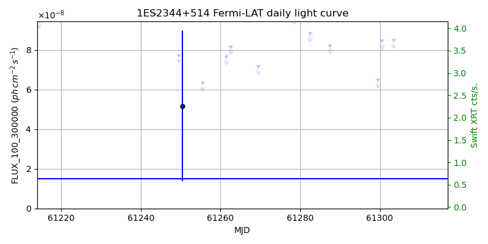
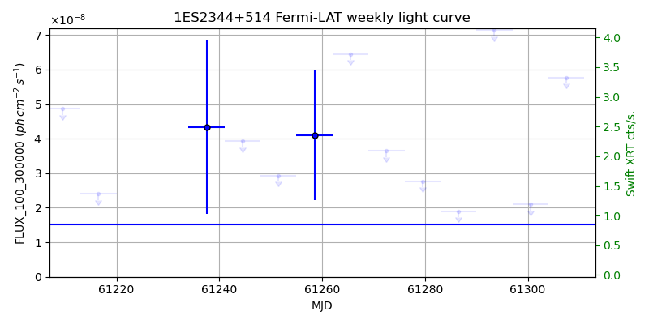
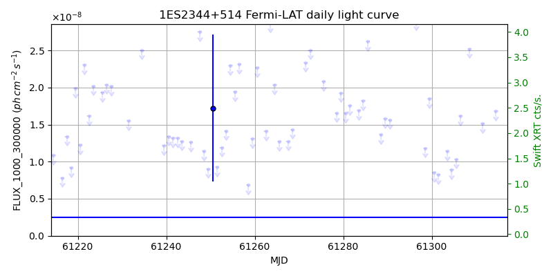
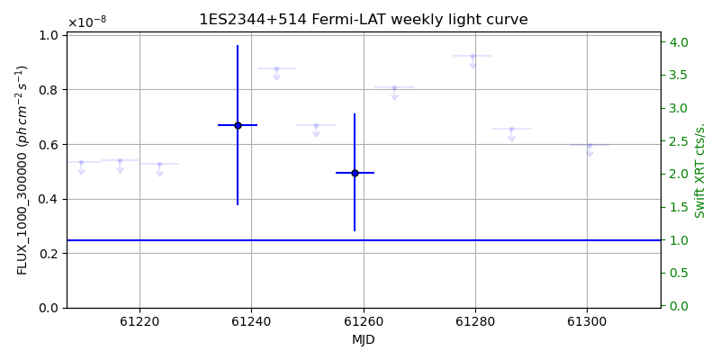

LAT Lightcurve site: https://fermi.gsfc.nasa.gov/ssc/data/access/lat/msl_lc/source/1ES_2344p514
Swift site: https://www.swift.psu.edu/monitoring/source.php?source=1ES2344+514
NED: Query
Time of last update of this page: UT: 2026-10-02 15:32 (MJD: 61315.647)
| Property | Value |
|---|---|
| R.A. | 23:47:04.80 |
| Dec. | 51:42:18.0 |
| z | 0.044 |
| 3FGL SpectrumType | PowerLaw |
| 3FGL PL Index | 1.78 |
| 3FGL Flux_100_300000 | 1.51e-08 1 / (s cm2) |
| 3FGL Flux_1000_300000 | 2.46e-09 1 / (s cm2) |
| 3FGL Flux >200 GeV | 3.83e-11 1 / (s cm2) |
| 3FGL Extrap. Crab >200 GeV | 0.16 |
| 3FGL Flux After EBL Absorption >200GeV | 2.94e-11 1 / (s cm2) |
| 3FGL EBL Crab Fraction >200GeV | 0.12 |

| MJD | dMJD | Flux | dFlux | Frac3FGL | FracCrab>200GeV | EBLFracCrab>200GeV |
|---|---|---|---|---|---|---|
| 61310.50 | 0.50 | 2.13e-07 | 0.00e+00 | 0.00 | 0.00 | 0.00 |
| 61311.50 | 0.50 | 1.57e-07 | 0.00e+00 | 0.00 | 0.00 | 0.00 |
| 61312.50 | 0.50 | 1.27e-07 | 0.00e+00 | 0.00 | 0.00 | 0.00 |
| 61313.50 | 0.50 | 1.21e-07 | 0.00e+00 | 0.00 | 0.00 | 0.00 |
| 61314.50 | 0.50 | 3.36e-07 | 0.00e+00 | 0.00 | 0.00 | 0.00 |

| MJD | dMJD | Flux | dFlux | Frac3FGL | FracCrab>200GeV | EBLFracCrab>200GeV |
|---|---|---|---|---|---|---|
| 61279.50 | 3.50 | 2.76e-08 | 0.00e+00 | 0.00 | 0.00 | 0.00 |
| 61286.50 | 3.50 | 1.90e-08 | 0.00e+00 | 0.00 | 0.00 | 0.00 |
| 61293.50 | 3.50 | 7.14e-08 | 0.00e+00 | 0.00 | 0.00 | 0.00 |
| 61300.50 | 3.50 | 2.09e-08 | 0.00e+00 | 0.00 | 0.00 | 0.00 |
| 61307.50 | 3.50 | 5.77e-08 | 0.00e+00 | 0.00 | 0.00 | 0.00 |

| MJD | dMJD | Flux | dFlux | Frac3FGL | FracCrab>200GeV | EBLFracCrab>200GeV |
|---|---|---|---|---|---|---|
| 61310.50 | 0.50 | 5.53e-08 | 0.00e+00 | 0.00 | 0.00 | 0.00 |
| 61311.50 | 0.50 | 1.51e-08 | 0.00e+00 | 0.00 | 0.00 | 0.00 |
| 61312.50 | 0.50 | 4.96e-08 | 0.00e+00 | 0.00 | 0.00 | 0.00 |
| 61313.50 | 0.50 | 7.37e-08 | 0.00e+00 | 0.00 | 0.00 | 0.00 |
| 61314.50 | 0.50 | 1.68e-08 | 0.00e+00 | 0.00 | 0.00 | 0.00 |

| MJD | dMJD | Flux | dFlux | Frac3FGL | FracCrab>200GeV | EBLFracCrab>200GeV |
|---|---|---|---|---|---|---|
| 61279.50 | 3.50 | 9.22e-09 | 0.00e+00 | 0.00 | 0.00 | 0.00 |
| 61286.50 | 3.50 | 6.56e-09 | 0.00e+00 | 0.00 | 0.00 | 0.00 |
| 61293.50 | 3.50 | 1.82e-08 | 0.00e+00 | 0.00 | 0.00 | 0.00 |
| 61300.50 | 3.50 | 5.98e-09 | 0.00e+00 | 0.00 | 0.00 | 0.00 |
| 61307.50 | 3.50 | 1.47e-08 | 0.00e+00 | 0.00 | 0.00 | 0.00 |
--------------------------------------------------------- Using user-supplied coords: 23:47:04.80 51:42:18.0 2000 --------------------------------------------------------- FLWO UT night of: 2026-10-03 Local Sid. @ Midnight: 00:24 Sunset (-15.0) (local, UT): 19:14 02:14 Sunrise (-15.0) (local, UT): 05:12 12:12 Moonrise (local, UT): 22:48 05:48 Moonset (local, UT): Moon phase: 0.53 --------------------------------------------------------- AzTime LSID UT Obj_el Obj_az Mn_el Mn_az Sep. --------------------------------------------------------- 19:14 19:37 02:14 40.8 46.5 -28.5 20.1 73.5 19:44 20:07 02:44 45.4 46.3 -26.2 26.7 73.8 20:14 20:37 03:14 50.0 45.4 -23.2 32.8 74.0 20:44 21:07 03:44 54.5 43.4 -19.6 38.5 74.3 21:14 21:37 04:14 58.8 40.1 -15.7 43.6 74.5 21:44 22:07 04:44 62.7 35.0 -11.3 48.4 74.7 22:14 22:37 05:14 66.0 27.5 -6.5 52.7 74.9 22:44 23:07 05:44 68.5 17.3 -0.8 56.7 75.1 23:14 23:37 06:14 69.7 4.7 3.8 60.4 75.3 23:44 00:07 06:44 69.5 351.4 9.1 63.9 75.5 00:14 00:38 07:14 67.9 339.4 14.6 67.1 75.7 00:44 01:08 07:44 65.1 330.0 20.3 70.2 75.8 01:14 01:38 08:14 61.6 323.3 26.1 73.1 76.0 01:44 02:08 08:44 57.5 318.7 32.1 76.0 76.2 02:14 02:38 09:14 53.2 315.9 38.1 78.8 76.3 02:44 03:08 09:44 48.7 314.2 44.2 81.7 76.4 03:14 03:38 10:14 44.1 313.5 50.3 84.8 76.6 03:44 04:08 10:44 39.4 313.6 56.5 88.1 76.7 04:14 04:38 11:14 34.8 314.2 62.7 91.9 76.8 04:44 05:08 11:44 30.3 315.2 68.9 96.9 77.0 05:12 05:37 12:12 26.0 316.7 74.7 103.8 77.1 --------------------------------------------------------- Dark hours >55 deg.: 2.02 srcstart (UT): 2026-10-03 03:47 srcend (UT): 2026-10-03 05:48